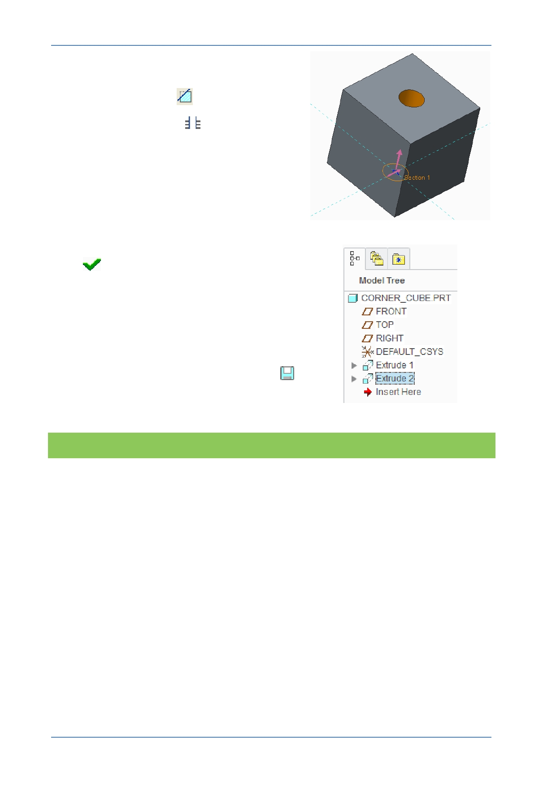

PTC Academic Program
7. Defining the extruded (cut) circle.
Set the direction into the model.
Remove materials
should be selected.
Select Through All
( X3 ) from the
depth drop-down menu, so that the extrude
feature will intersect the entire model.
Press the middle mouse button and drag to
spin the model and see that the extrude
feature intersects the entire model.
In the dashboard, click Complete Feature
to complete the extrude feature.
A second extrude feature is added to the
model tree on the left of the screen.
8. Saving your work:
Press CTRL + D to reorient the model.
In the Quick Access toolbar, click Save
.
What have you learned?
Viewing the model – default, refit, 3D orientation, spin, pan, zoom, 2D pan and
zoom.
Graphics toolbar – menu options.
Datum display – visibility.
Extrude – removing material (cut), changing direction and intersect with all
surfaces.
Sketch – On surface, dashboard, center and point circle, dimension, lock
dimension.
Dashboard to define and edit feature options.
Edit features in the graphics area.
Edit definition to re-open and edit existing features.
Saving the model.
© 2012 PTC
Creo Parametric 2.0 Primer
Page 28